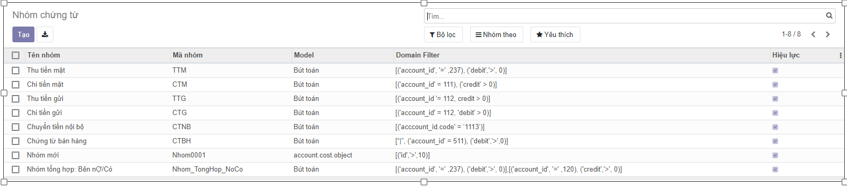

Khai báo danh mục
Thực hiện hướng dẫn về các Danh mục cần khai báo trên ứng dựng Kế toán. Việc khai báo các Danh mục có thể được thực hiện tại bất kỳ thời điểm nào tùy thuộc người sử dụng: có thể trước thời điểm nhập chứng từ hay thực hiện được ngay tại thời điểm nhập chứng từ.
Đối tượng
Nhóm đối tượng
Đối tượng
Khách hàng
Nhà cung cấp
Cơ cấu tổ chức
[Các chức năng liên quan đến quản lý Đơn vị, phòng ban]
Công ty
Đơn vị
Hàng hóa vật tư
[Các chức năng liên quan đến quản lý Hàng hóa, kho vận]
Sản phẩm
Biến thể sản phẩm
Nhóm sản phẩm
Số Lô/Seri
Đơn vị tính
Nhóm đơn vị tính
Bảng giá bán
Bảng giá mua
Kho
Vị trí
Kiểu giao nhận
Kế toán
[Các chức năng liên quan đến quản lý khai báo kế toán]
Hệ thống tài khoản
Sổ nhật ký
Tiền tệ
Mô hình phân bổ doanh thu chưa thực hiện
Mô hình phân bổ chi phí trả trước
Mô hình cấn trừ công nợ
Cấu hình kết chuyển
Ngân hàng
[Các chức năng liên quan đến quản lý về Ngân hàng]
Ngân hàng
Tài khoản ngân hàng
Thuế
[Các chức năng liên quan đến quản lý về Thuế]
Nhóm thuế
Thuế
Thiết lập thông tin cơ quan thuế, đại lý thuế
Cơ quan thuế
Ngành nghề
Biểu thuế Tiêu thụ đặc biệt
Biểu thuế Tài nguyên
Chi phí
[Các chức năng liên quan đến quản lý về Chi phí]
Đối tượng tập hợp chi phí
Khoản mục chi phí
Công trình
Loại công trình
Chứng từ, sổ sách
[Các chức năng liên quan đến quản lý Sổ sách]
Sổ hạch toán
Sổ nhật ký
Loại chứng từ
Nhóm chứng từ
Mục đích
Chức năng này cho phép người dùng khai báo Nhóm chứng từ sử dụng trên hệ thống
Các bước thực hiện
- Vào phân hệ Tổng hợp, chọn Nhóm chứng từ, nhấn Tạo (Hoặc vào theo chức năng tại phần Tìm kiếm)

- Khai báo các thông tin chi tiết của Nhóm chứng từ

- Mã nhóm: Không trùng với Mã đã khai báo
- Tên nhóm: Thông tin để quản lý
- Model: quyết định việc lấy dữ liệu bút toán tại các phần hành
-
Domain filter: Điều kiện để lọc dữ liệu, áp dụng cho phần Đánh CTGS
-
Nhấn nút Lưu